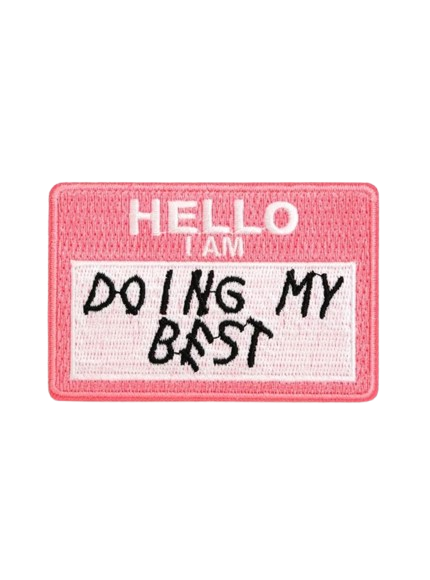
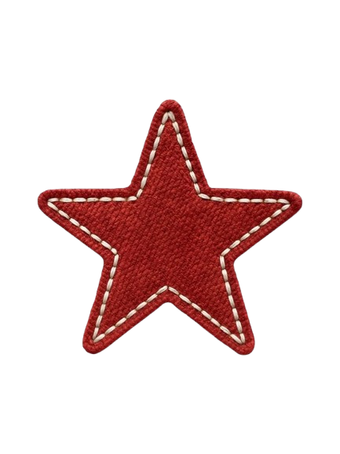

Nathalia
Vilasse


J’ai découvert le développement web lors d’une formation antérieure, où j’ai appris les bases du HTML et du CSS. J’ai immédiatement accroché. J’ai ensuite continué à me former en autonomie, à travers des documentations et des vidéos en ligne, ce qui m’a naturellement menée à intégrer le BUT Métiers du Multimédia et de l’Internet.
En tant que développeuse, je considère le code comme un outil créatif, au même titre que le dessin ou la peinture. J’aimerais à terme devenir une développeuse créative, capable de concevoir des expériences web engageantes et accessibles.
Actuellement, je travaille à consolider des bases solides en développement front-end, notamment avec la découverte de React, ainsi qu’en back-end avec Node.js et le PHP orienté objet. Je développe également une sensibilité particulière à l’accessibilité, afin de permettre au plus grand nombre d’accéder au web. En parallèle, j’approfondis mes connaissances en UX/UI design.
Ma formation m’a appris à travailler à partir de besoins réels et sous contraintes, qu’elles soient techniques, temporelles ou fonctionnelles. Je sais analyser mes erreurs, les corriger et remettre en question mon travail lorsque cela est nécessaire. Les retours et conseils font partie intégrante de ma démarche d’amélioration continue.
Dans le cadre de ce stage, je souhaite consolider mes compétences en développement web en participant à des projets concrets et utiles, au sein d’une équipe professionnelle. Je souhaite y développer une approche du code à la fois rigoureuse et créative, en lien avec les besoins réels des utilisateurs.